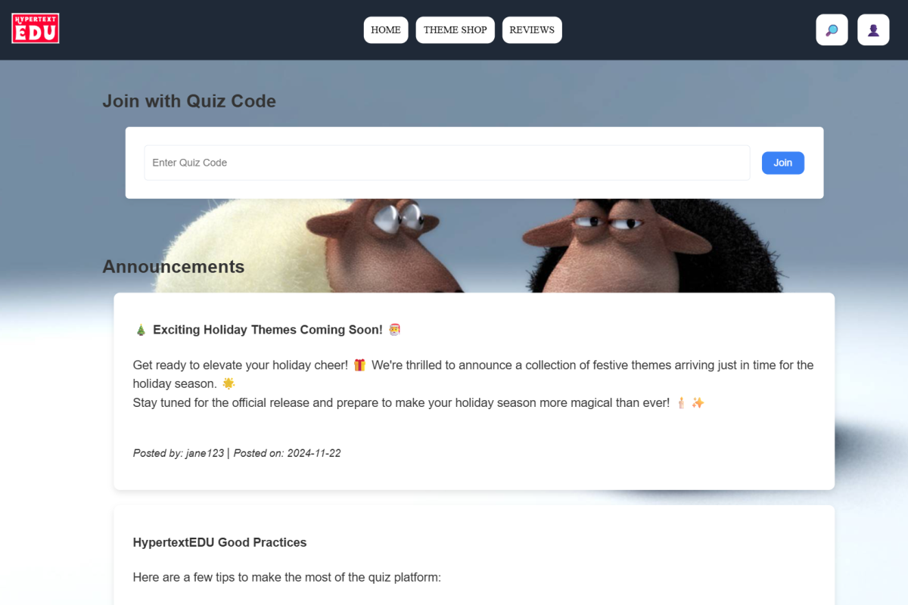
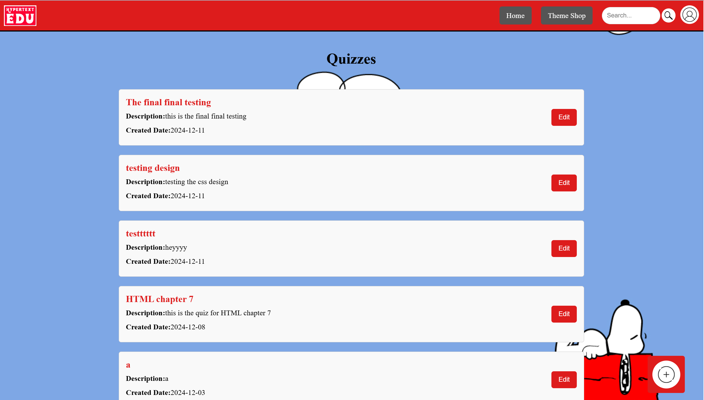
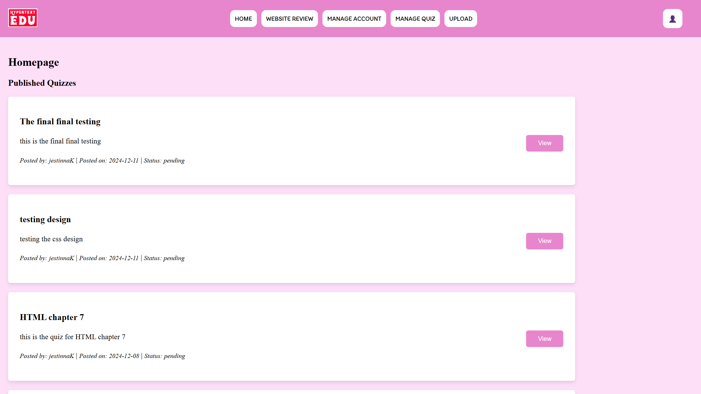

A web quiz platform for teaching HTML, designed around three distinct audiences — students joining by quiz code, instructors authoring the material, and administrators moderating what goes live.
View Source CodeHyperText Edu was built to streamline instructor operations and strengthen university students' understanding of HyperText Markup Language. Teaching HTML presents a particular problem: the subject is best learned by doing, but assessing a large cohort quickly becomes an administrative burden.
The platform separates that workload across three roles. Students join a quiz with a short code — no account hunting, no shared links — and see announcements and guidance on the same landing page. Instructors work in a dedicated console where each quiz can be created, described and revised independently. Administrators sit above both, holding a review queue that gates what students ultimately see.
Alongside the teaching flow, a theme shop lets users reskin the entire interface. It was a deliberate exercise in separating presentation from structure: the same markup drives every theme, with only the styling layer swapped underneath.
The platform runs on a PHP and MySQL stack served through Apache, with quiz content, user accounts and review status all persisted in the database rather than held in the page.
Students enter a short code on the landing page to reach a quiz directly, removing the friction of navigating a course hierarchy.
A dated, attributed announcement stream on the student homepage carries platform updates and study guidance.
A dedicated console listing every quiz with its description and creation date, each editable in place, plus a quick-add control for new material.
Submitted quizzes carry a status and await approval, giving administrators editorial control over what reaches students.
Users restyle the whole interface from a catalogue of themes — the same structure rendered through a different visual identity.
Site-wide search for finding quizzes quickly, with account administration and content upload handled from the admin navigation.



I was the full-stack developer for the administrator system — the moderation and platform-management layer that sits above the student and instructor experiences. I owned that module from the interface through to the data behind it.